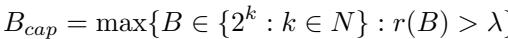

A CPU-CENTRIC PERSPECTIVE ON AGENTIC AI 图表详解¶
Figure 1. Characterization of agentic AI workloads on the basis of (a) Orchestrator (LLM and Host) (b) Agentic Path (Static and Dynamic) and (c) Repetitiveness (Single-step and Multi-step)¶

- 图片展示了对 Agentic AI 工作负载的系统级分类框架，基于三个正交维度：Orchestrator、Agentic Path 和 Repetitiveness，旨在揭示其对 CPU/GPU 系统性能的影响。
- Orchestrator（编排器）维度：
- LLM-orchestrated：由 LLM 自身控制执行流，决定何时调用工具或输出最终结果。图示为“Action: Invoke Tool → Tool → Tool Output → LLM → Final output”。
- Host-orchestrated：由主机（CPU/Python代码）控制流程，LLM 仅作为推理引擎。图示为“Tool 1, Tool 2, Tool 3”并行或串行后输入 LLM，最终输出。标注“Orchestrator running on CPU”。
- Agentic Path（代理路径）维度：
- Static Path：遵循预定义、确定性的工具调用序列。图示为“LLM 1 → Tool 1 → Tool 2 → LLM 2 → Final output”，路径固定。
- Dynamic Path：在运行时根据中间结果动态构建执行图。图示为“LLM 1”可选择性调用“Tool 1, Tool 2, Tool 3”，再进入“LLM 2”，路径非线性、自适应。
- Repetitiveness（重复性）维度：
- Single Step：单次推理完成任务，无环境反馈循环。图示为“Tool → LLM → Final output”，一步到位。
- Multi Step：涉及多次迭代精炼，用于复杂任务。图示为“Tool → LLM → Tool → LLM → Tool → LLM → Final output”，形成闭环。
- 该分类体系是论文后续性能剖析和优化策略（如 CGAM、MAWS）的基础，强调了不同架构选择如何直接导致不同的 CPU/GPU 资源瓶颈。
- 下表总结了各分类维度的关键特征：
| 分类维度 | 类别 | 关键特征 | 典型代表 |
|---|---|---|---|
| Orchestrator | LLM-orchestrated | LLM 决策控制流 | ReAct, AutoGPT, BabyAGI |
| Host-orchestrated | 主机（CPU）管理调度 | LangChain, Haystack, LlamaIndex | |
| Agentic Path | Static Path | 预定义、确定性工作流 | LangChain, Haystack |
| Dynamic Path | 运行时自适应构建执行图 | Tree-of-Thoughts, Reflexion | |
| Repetitiveness | Single-step | 单次推理完成 | RAG, Zero-shot tool use |
| Multi-step | 多轮迭代精炼 | WebArena, Balrog |
Table 1. Representative Agentic AI systems (Tools/Application selected for profiling are underlined)¶

- 该表格系统性地归纳了五种代表性 Agentic AI 工作负载，依据三个核心维度进行分类：Orchestrator（编排器）、Path（路径）与 Flow（流程/重复性），并列出其使用的工具及目标应用场景。
- 表格中所有用于性能分析的工具和应用均以下划线标注，便于快速识别研究重点。
- 各工作负载的特征如下：
| Agentic Workload | Orchestrator | Path | Flow | Tools (Underlined) | Application (Underlined) |
|---|---|---|---|---|---|
| Toolformer | LLM | Dynamic | Single-step | Wikipedia Search, Calculator API, Machine Translation System, LLM-based QA, Calendar | QA, MLQA, Math |
| SWE-Agent | LLM | Dynamic | Multi-step | File I/O, Bash/Python Execution | SDE, data analysis |
| Haystack | Host | Static | Single-step | Web search, Document Retrieval | QA |
| ChemCrow | LLM | Dynamic | Multi-step | Literature Search (Arxiv/Pubmed), Molecular tools, Chemical Reaction Tools | Chemistry Research Assistant |
| LangChain | Host | Static | Single-step | Web search, summarizer, Python code generator/interpreter | QA, Math, DevOps, Summarization |
- Toolformer 由 LLM 编排，采用动态路径与单步流程，主要依赖 Calculator API 等工具，应用于数学类任务。
- SWE-Agent 同样由 LLM 编排，支持多步动态流程，核心工具为 Bash/Python 执行，聚焦于软件工程（SDE）。
- Haystack 由 Host 编排，采用静态路径与单步流程，关键工具是 Document Retrieval，专攻问答（QA）。
- ChemCrow 由 LLM 编排，支持多步动态流程，依赖 Literature Search (Arxiv/Pubmed)，服务于化学研究助理场景。
- LangChain 由 Host 编排，采用静态路径与单步流程，整合 Web search 与摘要工具，覆盖 QA、数学、DevOps 及 Summarization 多领域。
Figure 2. (a) Haystack with ENNS retrieval on QA benchmarks (b) Toolformer with WolframAlpha API on Math benchmarks (c) Chemcrow with literature (Arxiv/Pubmed) search tool on Chemistry benchmarks (d) Langchain with web search and LexRank summarization tools on QA benchmarks (e) Mini-SWE-Agent with bash/Python execution tools on coding benchmarks¶

- 图片展示了五个代表性 Agentic AI 工作负载在不同基准测试下的端到端运行时分解，清晰区分了 CPU工具处理 与 GPU/LLM推理 的耗时占比。
- 每个工作负载的柱状图按基准测试分组，纵轴为运行时间（秒），颜色编码区分组件：紫色/斜线代表 CPU工具（如ENNS检索、WolframAlpha API等），彩色实块代表LLM推理（如GPT-OSS-20B、Qwen2.5-Coder-32B等）。
- Haystack RAG 在QA基准上，ENNS检索 占据主导地位，例如在NQ上耗时6.0秒（总9.1秒），占比约66%；HotpotQA和TriviaQA中检索耗时分别为8.0秒和7.7秒，占总时长的84.5%-90.6%，而LLM推理仅贡献约1.1秒。
- Toolformer 在数学基准上，WolframAlpha API调用 是主要延迟来源，例如在ASDiv上API耗时1.4秒（总3.4秒），占比41%；SVAMP和MAWPS中API耗时分别为1.5秒和1.7秒，而LLM推理（GPT-J-6B）稳定在1.0秒。
- ChemCrow 在化学基准上，文献搜索（Arxiv/Pubmed）是瓶颈，例如在nicotine任务中搜索耗时6.1秒（总13.3秒），占比46%；warfarin、caffeine、aspirin任务中搜索耗时分别为5.9、4.0、10.1秒，而最终GPT-4-0613推理耗时5.6-7.6秒，总时长高达12.6-18.8秒。
- LangChain 在QA基准上，Google搜索 和 LexRank摘要 共同构成主要延迟，例如在FreshQA上搜索+摘要耗时4.0秒（总9.0秒），占比44%；Musique和QASC中工具耗时分别为4.0秒和3.5秒，而LLM推理（GPT-OSS-20B）耗时1.5-1.7秒。
- SWE-Agent 在编码基准上，Bash/Python执行 是最大开销，例如在APPS上执行耗时17秒（总61秒），占比28%；BigCodeBench和DS-1000中执行耗时分别为30秒和32秒，占比高达49%-64%，而LLM推理（Qwen2.5-Coder-32B）耗时仅1.8-1.3秒。
| 工作负载 | 基准测试 | 总运行时 (s) | CPU工具耗时 (s) | GPU/LLM耗时 (s) | CPU工具占比 |
|---|---|---|---|---|---|
| Haystack RAG | NQ | 9.1 | 6.0 | 1.1 | 66% |
| HotpotQA | 8.5 | 8.0 | 0.5 | 94% | |
| TriviaQA | 8.5 | 7.7 | 0.8 | 91% | |
| Toolformer | ASDiv | 3.4 | 1.4 | 2.0 | 41% |
| SVAMP | 3.5 | 1.5 | 2.0 | 43% | |
| MAWPS | 3.7 | 1.7 | 2.0 | 46% | |
| ChemCrow | nicotine | 13.3 | 6.1 | 7.2 | 46% |
| warfarin | 15.4 | 5.9 | 9.5 | 38% | |
| caffeine | 12.6 | 4.0 | 8.6 | 32% | |
| aspirin | 18.8 | 10.1 | 8.7 | 54% | |
| LangChain | FreshQA | 9.0 | 4.0 | 5.0 | 44% |
| MusiQue | 9.0 | 4.0 | 5.0 | 44% | |
| QASC | 9.0 | 3.5 | 5.5 | 39% | |
| SWE-Agent | APPS | 61.0 | 17.0 | 44.0 | 28% |
| BigCodeBench | 61.0 | 30.0 | 31.0 | 49% | |
| DS-1000 | 61.0 | 32.0 | 29.0 | 53% |
- 综合来看，CPU工具处理 在所有工作负载中均占据显著甚至主导的延迟比例，最高可达90.6%（Haystack RAG on HotpotQA），充分印证了论文核心观点：Agentic AI的性能瓶颈常在CPU而非GPU。
Figure 3. Comparison of multi-processing and multi-threading with sequential baseline (single core) for Langchain workload¶

- 图表展示了 LangChain 工作负载在不同批处理大小（Batch Size）下，三种并行策略的端到端延迟对比：Sequential Baseline（单核串行）、Multi-Threading（多线程）和 Multi-Processing（多进程）。
- 纵轴为对数刻度，单位为秒（s），横轴为批处理大小，从1到128。
- 在小批量（如 Batch Size = 1, 2, 4）时，三种策略延迟接近，性能差异不显著。
- 随着批处理规模增大，Multi-Processing 表现出明显优势：
- 在 Batch Size = 128 时，Sequential Baseline 延迟高达 332 秒。
- Multi-Threading 延迟为 20 秒，相比基线提速约 16.6×。
- Multi-Processing 延迟仅为 12 秒，相比基线提速 27.7×，相比多线程提速 1.67×。
- 数据表明，在大规模并行场景下，Multi-Processing 能更有效地利用多核 CPU 资源，规避 Python 的 GIL（Global Interpreter Lock） 限制，从而获得更高吞吐与更低延迟。
- 关键结论：对于 CPU 密集型的 agentic AI 工作负载（如 LangChain），Multi-Processing 是更优的并行化方案，尤其在大批次场景下。
| Batch Size | Sequential Baseline (s) | Multi-Threading (s) | Multi-Processing (s) |
|---|---|---|---|
| 1 | 3 | 3 | 2 |
| 2 | 6 | 3 | 3 |
| 4 | 11 | 3 | 3 |
| 8 | 23 | 4 | 3 |
| 16 | 42 | 5 | 4 |
| 32 | 84 | 7 | 5 |
| 64 | 168 | 11 | 7 |
| 128 | 332 | 20 | 12 |
Figure 4. (a) vLLM throughput saturation for GPT-OSS-20B model (b) Throughput saturation for various agentic workloads (c) Average time taken by different components in Langchain benchmark showing a critical CPU context switching bottleneck at batch size 128¶

-
图 4 包含三个子图，分别展示 vLLM 吞吐量饱和、不同 agentic AI 工作负载的吞吐量变化 和 LangChain 基准测试中各组件平均耗时，用于揭示 CPU 与 GPU 在大规模批处理下的性能瓶颈。
-
子图 (a) 展示了 GPT-OSS-20B 模型在 vLLM 服务下的吞吐量（tokens/s）随批处理大小（Batch Size）的变化趋势。横轴为批处理大小（从 1 到 128），纵轴为吞吐量。不同颜色和标记代表不同的输入/输出 token 长度组合：
- 输入 500 / 输出 500
- 输入 1000 / 输出 1000
- 输入 1500 / 输出 1500
- 输入 2000 / 输出 2000
- 所有曲线均显示：吞吐量随批处理大小增加而上升，但在批处理大小达到 64 后增长趋缓，表明存在 GPU 内存带宽或 KV Cache 容量瓶颈。
-
子图 (b) 展示了四种代表性 agentic AI 工作负载（Toolformer、Haystack、LangChain、SWE-Agent）在不同批处理大小下的吞吐量（batch/s）变化。纵轴采用对数刻度，横轴为批处理大小（1 至 128）。结果表明：
- 所有工作负载的吞吐量均随批处理增大而提升，但增速逐渐放缓。
- Toolformer 和 LangChain 的吞吐量在批处理大小 128 时仍保持较高增长，而 Haystack 和 SWE-Agent 在较小批处理（如 32 或 64）后即出现明显饱和。
- 这反映了不同工作负载受 CPU 并行性限制（如核心过载、缓存一致性开销）或 GPU 内存容量限制 的差异。
-
子图 (c) 显示了 LangChain 工作负载在 FreshQA 基准下，不同批处理大小时各组件的平均延迟（Latency, s）。包含三个组件：
- URL Fetch（蓝色三角）
- Summarization（紫色方块）
- LLM Inference（橙色菱形）
- 结果显示：
- URL Fetch 延迟几乎恒定，说明其并行化良好且无显著瓶颈。
- Summarization 延迟在批处理大小 64 时约为 2.9 秒，到 128 时跃升至 6.3 秒，表明存在 严重的 CPU 上下文切换或核心过载瓶颈。
- LLM Inference 延迟从 2.6 秒增至 3.9 秒，反映 GPU 内存压力导致的推理延迟增加。
- 综合来看，批处理大小 128 时，CPU 端的 Summarization 成为关键瓶颈，其延迟增幅远超其他组件。
-
关键结论：
- GPU 吞吐量受限于 KV Cache 大小和内存带宽，尤其在大 batch size 下。
- CPU 吞吐量受限于核心过载、缓存一致性及同步开销，在 LangChain 中表现为 Summarization 阶段的延迟激增。
- Agentic AI 系统需同时优化 CPU 与 GPU 资源调度，避免任一端成为系统瓶颈。
-
数据摘要表：
| 组件 | Batch Size 64 延迟 (s) | Batch Size 128 延迟 (s) | 增长倍数 |
|---|---|---|---|
| URL Fetch | ~0.5 | ~0.5 | 1.0x |
| Summarization | 2.9 | 6.3 | 2.2x |
| LLM Inference | 2.6 | 3.9 | 1.5x |
- 此图支撑论文核心观点：agentic AI 的性能瓶颈不仅存在于 GPU，更常由 CPU 侧工具处理引发，尤其在高并发场景下。
Figure 5. CPU (AMD Threadripper) and GPU (Nvidia B200) dynamic energy consumption for Langchain workload¶

- 图表展示了在 Langchain 工作负载下，CPU (AMD Threadripper) 与 GPU (NVIDIA B200) 的动态能耗随批处理大小（Batch Size）变化的趋势。
- 纵轴为能量消耗单位 Joules，采用对数刻度，横轴为批处理大小从 1 到 128。
- 数据显示，随着批处理规模扩大，CPU 动态能耗增长速度显著快于 GPU，呈现非线性加速趋势。
- 在批处理大小为 1 时，CPU 能耗为 22 J，GPU 为 86 J；当批处理增至 128 时，CPU 能耗飙升至 1807 J，GPU 为 2307 J。
- CPU 能耗占比从批处理大小 1 时的约 20% 上升至 128 时的 44%，表明在大规模并行场景下，CPU 成为系统能耗的重要贡献者。
- 下表总结各批处理大小下的具体能耗数据：
| Batch Size | CPU Dynamic Energy (J) | GPU Dynamic Energy (J) | Total Energy (J) |
|---|---|---|---|
| 1 | 22 | 86 | 108 |
| 2 | 37 | 125 | 162 |
| 4 | 64 | 295 | 359 |
| 8 | 134 | 427 | 561 |
| 16 | 291 | 595 | 886 |
| 32 | 417 | 832 | 1249 |
| 64 | 805 | 1329 | 2134 |
| 128 | 1807 | 2307 | 4114 |
- 该结果支持论文核心观点：在 agentic AI 场景中，CPU 并行效率低于 GPU，尤其在大批次下，其能耗占比不可忽视，需纳入系统级优化考量。
Figure 6. Timeline of batched agentic AI inference for (a) Multiprocessing, (b) CGAM, and (c) CGAMoverlap¶

- 图片展示了三种不同调度策略下批处理 agentic AI 推理的时间线对比：(a) Multi-processing (MP)、(b) CGAM 和 (c) CGAMoverlap，用于说明优化方案如何改善延迟和资源利用率。
- 图中横轴代表时间，纵轴按 CPU 核心分组（0-31, 32-64, 65-95, 96-128），每个核心组的条形图表示该时间段内执行的任务类型：
- 黄色块：Batch Tool (CPU)，代表工具调用阶段（如检索、总结、脚本执行等）。
- 绿色块：Batch Inference (GPU)，代表 LLM 推理阶段。
- 在 (a) Multi-processing (MP) 中，所有 128 个请求被同时分配到 128 个 CPU 核心上并行执行工具任务，随后统一进入 GPU 推理阶段。这种模式导致 高并发但低效率，因为 CPU 资源过度订阅，且 GPU 需等待所有 CPU 任务完成才能启动推理，造成尾部延迟（P90）显著增加。
- 在 (b) CGAM 中，系统将 128 个请求划分为两个微批次（micro-batch），每批次 64 个请求。第一批次在 CPU 0-63 上执行工具任务，完成后立即进入 GPU 推理；第二批次在 CPU 64-128 上执行工具任务，待第一批次 GPU 推理完成后才开始其 GPU 推理。这种方式通过限制并发度避免了 CPU 过载，从而 降低 P50 延迟约 2x，同时减少 KV 缓存占用和 CPU 动态能耗。
- 在 (c) CGAMoverlap 中，在第一批次完成 CPU 工具任务后，不等待其 GPU 推理结束，而是立即启动第二批次的 CPU 工具任务，实现 CPU 与 GPU 的重叠执行。虽然这会略微增加 P50 延迟（因 CPU 竞争加剧），但能显著 降低 P90 延迟约 1.8x，提升整体吞吐量。
- 下表总结了三种方法在 P50 和 P90 延迟上的相对性能表现：
| 方法 | P50 延迟 | P90 延迟 |
|---|---|---|
| MP | x | 2x |
| CGAM | 2x | 2x |
| CGAM_overlap | 1.2x | 1.8x |
- 关键结论：CGAM 通过微批次控制有效缓解 CPU 过度订阅问题，显著提升中位数延迟（P50）；而 CGAMoverlap 则通过流水线重叠进一步优化尾部延迟（P90），适用于对响应一致性要求更高的场景。两者均优于传统多进程方案，体现了 CPU-GPU 协同调度 在 agentic AI 系统中的重要性。
. Table 2. Throughput gain ratios r and selected Bcap values¶

- 该图像为论文中的 Table 2，标题为“Throughput gain ratios r and selected Bcap values”，用于展示不同 agentic AI 工作负载在批处理规模扩大时的吞吐量增益比及所选的批处理上限（Bcap）。
- 表格包含三列：Workload（工作负载）、r(64)（批大小从32增至64时的吞吐量增益比）、r(128)（批大小从64增至128时的吞吐量增益比）、Bcap（选定的批处理上限值）。
- 数据显示，所有三个工作负载（Langchain、Haystack、SWE-Agent）在批大小从64增至128时，吞吐量增益比均低于1.1，表明已进入性能饱和区。
- 根据论文第5.1.1节定义，当增益比 r(B) < λ（λ=1.1）时，即停止增加批大小。因此，所有工作负载均选定 Bcap = 64 作为最优批处理上限。
- 该表支撑了 CGAM 优化策略的核心思想：通过限制批大小避免资源浪费和性能下降，从而提升系统效率。
| Workload | r(64) | r(128) | Bcap |
|---|---|---|---|
| Langchain | 1.52 | 1.09 | 64 |
| Haystack | 1.15 | 1.08 | 64 |
| SWE-Agent | 1.32 | 1.10 | 64 |
eb22c551572f2681d8fd0238cb7a781a5e32ef7ceb2c7eba67c5617364e1b903.jpg¶

- 该图片展示了一个数学公式，用于定义 CGAM 优化策略中的 批处理上限（Batching Cap, Bcap）。
- 公式为：Bcap = max{B ∈ {2^k : k ∈ N} : r(B) > λ}。
- 公式含义解析：
- Bcap 是所选的最优批处理大小上限。
- B 的取值范围限定为 2 的幂次方（即 1, 2, 4, 8, 16, 32, 64, 128...），这是为了在系统中实现高效的并行化和内存对齐。
- r(B) 代表吞吐量增益比，定义为当前批大小 B 的吞吐量除以 B/2 批大小的吞吐量，即 r(B) = T(B)/T(B/2)。
- λ 是一个预设的效率阈值，用于判断吞吐量增长是否“显著”。论文中设定 λ = 1.1，意味着当批大小翻倍带来的吞吐量提升低于 10% 时，就认为进入了饱和区。
- 整个公式的目的是：在所有 2 的幂次方批大小中，选择那个最后一个使得吞吐量增益比 r(B) 仍大于阈值 λ 的批大小作为 Bcap。
- 此公式是 CGAM 优化的核心决策机制，它通过量化分析吞吐量收益来避免因盲目增大批大小而导致的性能饱和和资源浪费。
Figure 7. Comparison of CGAM and CGAMoverlap using Bcap = 64 against baseline (multi-processing or multi-threading) on (a) Langchain workload on FreshQA benchmark, (b) Haystack workload on NQ benchmark and (c) SWE-Agent on APPS benchmark¶

- 图片展示了 CGAM 和 CGAMoverlap 两种优化方案在三个不同工作负载（LangChain、Haystack、SWE-Agent）上的性能对比，基准为传统的多进程或线程并行方案，批处理上限 Bcap = 64。
- 所有子图均以“已完成任务百分比”为横轴，“延迟（秒）”为纵轴，呈现累积分布曲线，用于衡量 P50 和 P90 延迟表现。
- LangChain 工作负载（FreshQA 基准）：
- CGAM 相较基线实现 2.11x P50 延迟加速（从 11.21s 降至 5.32s），P90 延迟从 11.40s 降至 8.56s，加速 1.33x。
- CGAMoverlap 在 P50 上加速 1.69x（6.65s），P90 加速 1.33x（8.56s），相比 CGAM 虽 P50 略高，但整体曲线更平缓，体现重叠执行对尾部延迟的优化。
- Haystack 工作负载（NQ 基准）：
- CGAM 实现 1.94x P50 加速（42.87s → 22.12s），P90 从 44.72s 降至 39.01s，加速 1.15x。
- CGAMoverlap 的 P50 加速为 1.82x（23.55s），P90 加速 1.15x（39.01s），与 CGAM 接近，表明该工作负载中 CPU 与 GPU 延迟差异较大，重叠收益有限。
- SWE-Agent 工作负载（APPS 基准）：
- CGAM 达到 1.72x P50 加速（65.08s → 37.82s），P90 从 65.43s 降至 56.17s，加速 1.16x。
- CGAMoverlap 的 P50 加速为 1.37x（47.58s），P90 加速 1.16x（56.17s），显示在高度 CPU 密集型任务中，重叠策略牺牲部分 P50 以换取更早启动后续批次。
- 性能总结表：
| 工作负载 | 方案 | P50 延迟 (s) | P50 加速倍数 | P90 延迟 (s) | P90 加速倍数 |
|---|---|---|---|---|---|
| LangChain | Baseline | 11.21 | — | 11.40 | — |
| CGAM | 5.32 | 2.11x | 8.56 | 1.33x | |
| CGAMoverlap | 6.65 | 1.69x | 8.56 | 1.33x | |
| Haystack | Baseline | 42.87 | — | 44.72 | — |
| CGAM | 22.12 | 1.94x | 39.01 | 1.15x | |
| CGAMoverlap | 23.55 | 1.82x | 39.01 | 1.15x | |
| SWE-Agent | Baseline | 65.08 | — | 65.43 | — |
| CGAM | 37.82 | 1.72x | 56.17 | 1.16x | |
| CGAMoverlap | 47.58 | 1.37x | 56.17 | 1.16x |
- 核心结论：CGAM 在所有工作负载上均显著降低 P50 延迟，尤其适用于 CPU 密集型任务；CGAMoverlap 通过重叠执行可进一步优化 P90 延迟，但可能轻微增加 P50，适合对尾部延迟敏感的场景。
Figure 8. Comparison of MAWS against multiprocessing baseline on 128 mixed Langchain tasks (half LLM heavy, half CPU heavy)¶

- 图表标题为 Figure 8，对比 MAWS 优化方案与 Multiprocessing 基线在 128 个混合 LangChain 任务（50% CPU-heavy, 50% LLM-heavy）下的延迟表现。
- 横轴为“已完成任务百分比”（Percentile of Jobs Completed %），纵轴为“延迟（秒）”，反映不同百分位点的响应时间分布。
- Baseline: Multiprocessing（蓝色曲线）显示整体延迟较高，P99 达到 7.44 秒，表明在高负载下尾部延迟显著。
- Ours: MAWS（红色曲线）在所有百分位均优于基线，尤其在 P99 处降至 6.37 秒，实现 1.17x 的 P99 延迟加速。
- 图中用黄色菱形标记“LLM-heavy job”，绿色菱形标记“CPU-heavy job”，显示 MAWS 对两类任务均有优化，但更显著改善了 LLM-heavy 任务的尾部延迟。
- MAWS 通过自适应调度策略——对 LLM-heavy 任务采用轻量级多线程，释放 CPU 资源给 CPU-heavy 任务——有效缓解资源争抢，提升系统整体效率。
- 关键结论：MAWS 在混合负载场景下可降低尾部延迟，提升服务稳定性，尤其适用于异构 agentic AI 工作流。
| 指标 | Multiprocessing (Baseline) | MAWS (Ours) | 加速比 |
|---|---|---|---|
| P99 Latency (s) | 7.44 | 6.37 | 1.17x |
| 优化目标 | 无区分调度 | 自适应调度 | — |
| 适用场景 | 同构任务 | 混合任务 | — |
Figure 9. Comparison of MAWS+CGAM against multiprocessing baseline on 256 mixed Langchain tasks¶

- 图表展示的是 MAWS+CGAM 优化方案与 Multiprocessing (MP) 基线 在处理 256 个混合 LangChain 任务 时的延迟分布对比，横轴为“已完成任务百分比”，纵轴为“延迟（秒）”。
- 该实验场景包含三类任务：CPU-heavy job、LLM-heavy job 和 Half LLM-heavy jobs，分别用蓝色圆点、红色方块和黄色菱形标记。
- Baseline: MP 曲线（蓝色实线）代表传统多进程并行方案，其 P50 延迟约为 10.5 秒，P99 延迟接近 14 秒。
- MAWS + CGAM 曲线（红色实线）在所有百分位上均优于基线，尤其在中位数（P50）表现突出：
- 对于 CPU-heavy job，P50 延迟从约 10.5 秒降至 5.0 秒，实现 2.10x 加速。
- 对于 LLM-heavy job，P50 延迟从约 8.5 秒降至 7.1 秒，实现 1.20x 加速。
- 对于 All jobs，整体 P50 延迟从约 9.5 秒降至 6.7 秒，实现 1.41x 加速；P99 延迟从 14 秒降至 12.1 秒，实现 1.15x 加速。
- 优化效果源于 MAWS 的自适应调度策略（对 LLM-heavy 任务使用轻量级多线程，释放 CPU 资源给 CPU-heavy 任务）与 CGAM 的微批处理机制（限制批大小至 Bcap=64，避免资源饱和）协同作用。
- 数据表明，混合负载下联合优化可显著降低尾部延迟并提升系统吞吐效率，尤其对 CPU 密集型任务收益最大。